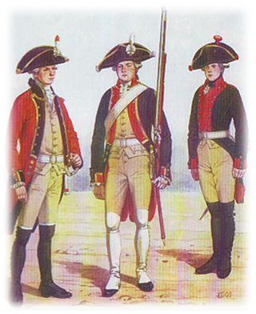

Соня Литвинова, Назарова Марьям, Литвененко Федя, Шутов Яков, Казаханов Шахбан, Нерсесян София, Маша Королёва, Устинова Алина. Мы создали этот сайт. В нём мы раскажемпро форму кадета МВД.
Если Фотите поддержать можете отправить нам донат
Специальная одежда (спецодежда, спецовка) — это средство индивидуальной защиты, предназначенное для защиты от вредных и опасных факторов для здоровья сотрудника на рабочем месте.Среди основных ее функций — обеспечение необходимого уровня безопасности труда и предохранение от разнообразных производственных загрязнений. Существует также мнение, что спецодежда может быть не только защитной, но и простой, т.е. это любые костюмы, предназначенные для осуществления определенных видов работ.
Кадетская форма одежды – общее название всех предметов обмундирования и знаков отличия, принятых для личного состава кадетского класса. Форменное обмундирование учеников военных заведений появилось еще при Петре Великом. В 1723 году он установил форму воспитанников Академии морской гвардии. Обмундирование включало в себя зеленый с красным кафтан и брюки, белые чулки, черную обувь и головной убор. Однако сухопутные войска обрели специальную форму лишь в 1731 году, при возникновении первого в стране кадетского корпуса. Барон Людвиг фон Люберас, бывший на тот момент его директором, предписал кадетам носить «белые штиблеты», «шляпы с золотым позументом и с бантом» и прическу в виде косы. Это было далеко не полное обмундирование, которое получили воспитанники перед Высочайшим смотром зимой 1732 года. Оно включало в себя стандартный для армии страны кафтан темно-зеленого цвета, наделенный красными лацканами, камзол и штаны. Обувались кадеты в башмаки с тупым носом и штиблеты. В обязательном порядке требовалось носить белый галстук и замшевые перчатки. Основную массу кадет составляли фузилеры, им полагалось надевать треуголку с кокардой из белых лент. Высокие молодые люди выбирались гренадерами и носили типичные для того времени шапки с гарусной кистью. 
При Елизавете Петровной мундир кадетов сменил цвет с темно-зеленого на светло-зеленый, также к форме добавились синие епанчовые полы, застегивающиеся на пуговицу. Соответственно, герб и вензель Анны Иоанновны сменились на аналогичные символы новой императрицы. Кадетский корпус изначально являлся престижным учебным заведением, о чем свидетельствовало и обмундирование его воспитанников, оформленное золотым галуном, как у офицеров гвардии.
В 1762 году был учрежден Артиллерийский и Инженерный Шляхетный кадетский корпус, целью которого была подготовка офицеров-специалистов. Потому изменили и кадетскую форму, которая с того момента представляла собой сочетание красного кафтана с черной отделкой, камзола и штанов лосиного цвета и шляпы с бантом. В праздничные дни полагалось носить парадный мундир с золотым галуном. Бомбардирам также следовало надевать особую кожаную шапку с полями и бронзовыми накладками. Достаточно скоро такие головные уборы оставили исключительно для парадов.
Форменная одежда кадетов существенно отличалась в зависимости от учебного заведения. Воспитанники Гимназии Чужестранных единоверцев облачались в малиновые кафтаны с голубой отделкой, а после преобразования гимназии в кадетский корпус (1792 год) получили форму в виде белого камзола и штанов и зеленого кафтана с красной отделкой.
Обмундирование воспитанников Императорского Сухопутного Шляхетного кадетского корпуса зависело от их возраста. Для пяти-шестилетних полагалась форма кофейного оттенка, для девяти-двенадцатилетних – голубого, для подростков от тринадцати до пятнадцати лет – серого. Кадеты старше 16 лет носили военные зеленые кафтаны с красной отделкой. Также у более взрослых учеников имелась характерная кисть на погонах. В «золотой век дворянства» кадетская форма отличалась разнообразием и нарядностью. Так как учебных заведений было немного, о единстве обмундирования говорить не приходилось. Существовали лишь общие черты, одинаковые для всей одежды воспитанников.
Император Павел I сделал темно-зеленый цвет основным для одежды военных. Ученикам-кадетам полагалось носить двубортные камзолы с длинными штанами, летом белого цвета, а зимой – черного, голубого и зеленого. Форма стала более скромной, о прежнем величии напоминали лишь гвардейские золотые галуны. Особо отличалась одежда воспитанников Императорского Военно-сиротского дома, представляющая собой кафтан без лацканов с красной отделкой, темно-зеленый кафтан и штаны.
В начале 19 века была установлена единая кадетская форма всех корпусов. Теперь кадеты носили кафтаны с темно-зелеными стоячими воротниками и серебристыми пуговицами. Головные уборы оформлялись галунами и петлицами также серебристого цвета.